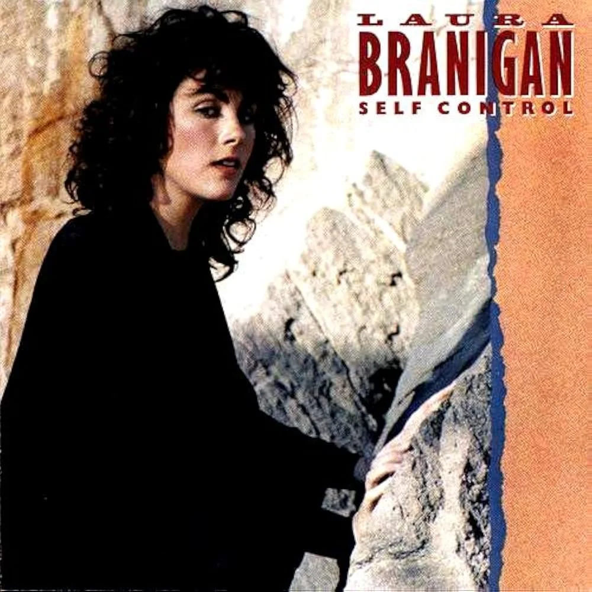

Partiendo la semana
Tatán abre el día con la actualidad, el humor y las canciones que van a sonar toda la semana.
2 h 10 min

| Pos | Canción | Ant. | Semanas | Reproducir |
|---|
Pulsa cualquier fila para llevarla al reproductor.
Tatán abre el día con la actualidad, el humor y las canciones que van a sonar toda la semana.
La sesión de fin de semana: mezcla continua con lo más pedido del Top 40.
Entrevistas largas y despedidas en directo: el podcast de conversación de RadioStar.
«Fuego lento» adelanta a Sonora Kilo con el mayor número de peticiones del año.
La emisión del viernes se podrá ver en vídeo desde el propio reproductor.
Nuevo episodio cada jueves, disponible a la carta en la web y en la app.
Pide tu canción, manda tu audio y entra en directo. Estamos al otro lado a cualquier hora.